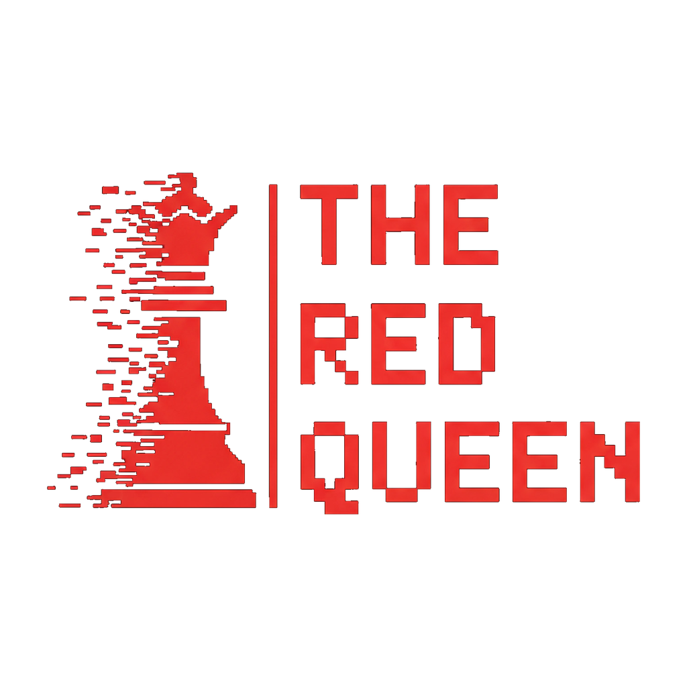
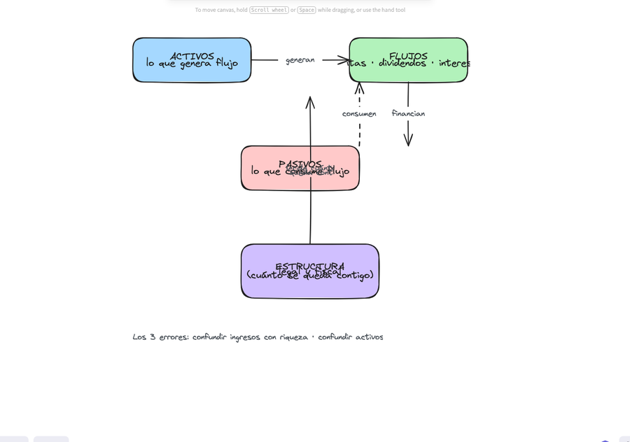

Método de los 7 pasos para diseñar y hacer crecer tu patrimonio.
Material propio de The Red Queen: método → plan escrito, en 3 días de trabajo profundo.
Cada paso tiene: objetivo → marco (framework) → ejercicio → entregable verificable.
| # | Archivo | Contenido |
|---|---|---|
| 00 | `00-guia-rapida.md` | Este archivo — cómo usar el kit |
| 01 | `01-educacion-patrimonial.md` | Paso 1: el juego real, lenguaje y criterios |
| 02 | `02-proposito-objetivos.md` | Paso 2: metas, horizonte, ritmo |
| 03 | `03-politica-inversion.md` | Paso 3: 3 estrategias + política de inversión (plantilla) |
| 04 | `04-estructuras-legales-fiscales.md` | Paso 4: blindaje patrimonial |
| 05 | `05-equipo-asesores.md` | Paso 5: el equipo correcto |
| 06 | `06-operacion-sistemas.md` | Paso 6: seguimiento como empresa |
| 07 | `07-gobernanza-familiar.md` | Paso 7: legado y cohesión |
| 08 | `08-mapa-patrimonial.md` | Anexo A: plantilla de mapa patrimonial |
| 09 | `09-tablero-seguimiento.md` | Anexo B: tablero de seguimiento mensual |
política (Crecimiento/Ingresos/Preservación) → 4. Blinda lo que tienes →
"Tu problema no es cuánto ganas. Es que tu dinero no tiene una estrategia."
No es falta de disciplina: es falta de método. El entregable final es un PLAN
ESCRITO, no apuntes ni teoría suelta.
"El lenguaje y los criterios con los que se toman las grandes decisiones financieras."
Objetivo: dejar de improvisar. No se puede diseñar un plan en un idioma que no se habla.
La riqueza no se construye "ahorrando" ni "invirtiendo en lo que todos invierten".
Se construye entendiendo 4 piezas que forman un sistema:

Los 3 errores del principiante (y su corrección):
| Error | Corrección |
|---|---|
| Confundir ingresos con riqueza | La riqueza = lo que queda y trabaja, no lo que entra |
| Confundir activos con "cosas que suben" | Activo = lo que genera flujo. Tu casa no paga tu vida |
| Confundir diversificación con dispersión | 20 posiciones sin tesis = 20 apuestas, no un sistema |
Marca con honestidad cuáles puedes definir en 1 frase:
Entregable 1: escribe en una línea la definición de los 4 que menos domines.
Son tu plan de estudio de las próximas 2 semanas.
Responde en 5 minutos, sin editar:
Entregable 2: 3 frases. Este ejercicio revela el "sistema operativo" con el
que has decidido hasta ahora.
Toda decisión patrimonial se evalúa con 5 criterios (el "pentágono"):
Regla: NUNCA evalúes una oportunidad con menos de 3 de estos criterios.
"Es buen negocio" sin estos 5 números no es una decisión, es una corazonada.
Escribe 5 frases: "Yo invierto para ______. Mi definición de activo es ______.
Mi mayor error pasado fue ______. A partir de hoy evalúo con: rentabilidad,
riesgo, liquidez, horizonte y fiscalidad. Mi brecha de conocimiento principal es ______."
→ Pasa al Paso 2 solo cuando las 5 frases estén escritas.
"A dónde va tu patrimonio."
Objetivo: definir metas, horizonte y ritmo. Un plan sin destino es un ejercicio de papel.
¿PARA QUÉ? → ¿CUÁNDO? → ¿CUÁNTO?
(propósito) (horizonte) (número)
Todo objetivo patrimonial se escribe como: **"Necesito [CUÁNTO] para [PARA QUÉ]
en [CUÁNDO]."**
Llena la tabla (mínimo 5 filas — sé específico, no "ser rico"):
| Meta | Para qué (propósito) | Cuándo (año) | Cuánto (USD) | Prioridad (1-5) |
|---|---|---|---|---|
| Ej: Educación hijos | Universidad de Mateo | 2039 | $150,000 | 1 |
Reglas del ejercicio:
Clasifica tus metas por horizonte — ESTO determina la estrategia de inversión:
| Horizonte | Ventana | Estrategia dominante (Paso 3) |
|---|---|---|
| Corto | 0-3 años | Preservación (no juegas el dinero que necesitas pronto) |
| Medio | 3-10 años | Ingresos / Balanceado |
| Largo | 10+ años | Crecimiento (el tiempo es tu aliado; la volatilidad, tu amiga) |
Regla de oro: el horizonte manda sobre la oportunidad. Una gran oportunidad
a 1 año NO es para dinero que necesitas a 6 meses. Si no respetas esto, el plan
se rompe en la primera corrección del mercado.
Define tu capacidad real de aportación (no la ideal):
Si la respuesta 3 es negativa o cercana a cero, tu PRIORIDAD es el ingreso
(Paso 5: equipo y carrera), no la inversión. El método no ignora esto.
Escribe tu declaración: *"Mi patrimonio existe para ______. Lo hago crecer a un
ritmo de $______/año. Protejo ______. En ______ años quiero ______."*
Entregable del Paso 2: la tabla de metas completa + tu declaración de 1 párrafo.
Esto es lo que se convierte en la "sección de objetivos" de tu política de inversión.
"El corazón del plan."
Objetivo: diseñar tus 3 estrategias — Crecimiento · Ingresos · Preservación —
y dejarlas por escrito en tu política de inversión. Este es el entregable central del curso.
| Estrategia | Objetivo | Horizonte | Perfil de activos | Métrica de éxito |
|---|---|---|---|---|
| Crecimiento | Multiplicar capital | 10+ años | Acciones, ETFs de crecimiento, venture, alternativas | CAGR a 10 años |
| Ingresos | Vivir del capital | 3-10 años | Dividendos, bonos, rentas, preferentes | Flujo anual $ |
| Preservación | No perder | 0-3 años | Caja, deuda corta, oro, inflación-hedge | Pérdida máx. < 2% |
Asignación estratégica objetivo (ejemplo — AJUSTA a tus metas del Paso 2):
| Estrategia | % del patrimonio | Vehículos típicos |
|---|---|---|
| Preservación | 20% | Deuda corta, money market, inflación-hedge |
| Ingresos | 30% | Dividendos, bonos corporativos, REITs, rentas |
| Crecimiento | 50% | Acciones globales, ETFs, private equity, venture |
Un IPS (Investment Policy Statement) es el documento que gobierna TODAS tus
decisiones. Si una inversión no cabe en la política, no se hace — sin excepciones.
[Declaración del Paso 2]
| Estrategia | % objetivo | Rango permitido |
|---|---|---|
| Preservación | __% | __–__% |
| Ingresos | __% | __–__% |
| Crecimiento | __% | __–__% |
Toda posición nueva se evalúa con: rentabilidad neta esperada, riesgo, liquidez,
horizonte, fiscalidad. Mínimo 3 criterios documentados por escrito.
[Firmante] · [Fecha] · [Próxima revisión]
Toma 3 decisiones financieras de los últimos 12 meses y evalúalas contra tu IPS:
| Decisión | ¿Cabía en la política? | ¿Qué dice el pentágono? | Veredicto |
|---|---|---|---|
| Ej: compré BTC en pico | No (sin tesis escrita) | Riesgo no medido | ❌ fuera de política |
Entregable del Paso 3: tu IPS firmada + la prueba de fuego con 3 veredictos.
El IPS es lo que hace que el método sobreviva a la primera corrección del mercado.
"Blindas lo que ya tienes."
Objetivo: proteger y ordenar el patrimonio de forma eficiente — antes de crecer más.
CAPA 1 · PERSONA → titularidad directa (la más expuesta)
CAPA 2 · SOCIEDAD → vehículo operativo (SLU/SAS/LLC — separa negocio de persona)
CAPA 3 · PATRIMONIO → vehículo de inversión (holding, fondo, trust)
CAPA 4 · LEGADO → fideicomiso / testamento / seguros (protege a los tuyos)
Principio rector: cada capa separa un riesgo. El objetivo NO es pagar menos
impuestos (eso es optimización agresiva); es **no pagar impuestos de más ni
exponer todo a un solo riesgo legal**. Estructura ≠ evasión: es orden.
| Activo | ¿A nombre de quién? | Riesgo legal actual (1-5) | Riesgo fiscal actual (1-5) | Capa deseada |
|---|---|---|---|---|
| Casa | ||||
| Cuentas de inversión | ||||
| Negocio | ||||
| Vehículos | ||||
| Cripto | ||||
Riesgo 5 = un juicio contra ti lo alcanza todo. Riesgo 1 = separado y blindado.
Si no sabes responder la #1 con un número, tu primera inversión es una consulta
con un contador/fiscalista especializado en patrimonio (Paso 5: equipo).
| Acción | ¿Quién la ejecuta? | Fecha límite | Costo estimado |
|---|---|---|---|
| Separar cuenta operativa de cuenta de inversión | $0 | ||
| Revisar titularidad de activos grandes | |||
| Testamento / beneficiarios actualizados | |||
| Consulta fiscal anual programada | |||
| Seguro adecuado a la etapa (vida, salud, propiedad) |
Entregable del Paso 4: inventario de exposición completo + plan de blindaje
con 5 acciones y fechas. NO hace falta ejecutarlo hoy — hace falta que exista.
"Con quién te rodeas. El equipo correcto trabajando para ti, no al revés."
Objetivo: rodearte de expertos alineados a TU política, no de vendedores con la suya.
┌───────────────────────────────────────────────┐
│ TU EQUIPO PATRIMONIAL │
│ │
│ 1. CONTADOR / FISCALISTA → estructuras │
│ 2. ASESOR DE INVERSIONES → ejecuta la IPS │
│ 3. ABOGADO PATRIMONIAL → protección legal │
│ 4. SEGUROS → riesgo puro │
│ (5. SUCESIÓN/FIDEICOMISO → legado, paso 7) │
└───────────────────────────────────────────────┘
La regla del capitán: tú defines la política (Paso 3); el equipo la ejecuta.
Un asesor que discute tu IPS es un asesor. Un asesor que te vende lo suyo es un vendedor.
| Rol | ¿Tienes a alguien? | ¿Trabaja según TU plan o el suyo? | Conflicto de interés visible? | ¿Lo cambiarías? |
|---|---|---|---|---|
| Contador/fiscalista | ||||
| Asesor de inversiones | ||||
| Abogado | ||||
| Seguros |
Señales de conflicto de interés (huir):
Antes de contratar a cualquier asesor, exige respuestas por escrito:
Regla de oro: si no responde la #1 con claridad total, no es tu equipo.
La compensación es el primer dato, no el último.
| Rol | ¿Necesito contratar/mejorar? | Candidatos a entrevistar | Fecha |
|---|---|---|---|
| Fiscalista | |||
| Asesor de inversiones | |||
| Abogado patrimonial | |||
| Seguros |
Entregable del Paso 5: auditoría completa + checklist respondida por tu
asesor actual (o plan de contratación con 3 candidatos por rol).
"Orden y control. Cómo darle seguimiento a tu patrimonio como se le da a una empresa."
Objetivo: que tu patrimonio tenga un tablero, métricas y cadencia — no "ver cómo va".
SISTEMA 1 · REGISTRO → ¿qué tengo? (mapa patrimonial, Anexo A)
SISTEMA 2 · MÉTRICAS → ¿cómo va? (tablero mensual, Anexo B)
SISTEMA 3 · CADENCIA → ¿qué decido y cuándo? (reunión mensual + anual)
Crea tu mapa patrimonial (plantilla en `08-mapa-patrimonial.md`):
Regla de oro: si no está en el registro, no existe. El dinero "que está por ahí"
es el que se pierde, se olvida o se duplica en riesgo.
Cada mes (mismo día, 30 minutos) actualiza:
| Métrica | Valor | vs mes anterior | Señal |
|---|---|---|---|
| Patrimonio neto total | $ | ↑/↓ | ¿Por qué? |
| Capacidad de aportación ejecutada | $ | ¿Aportaste lo planeado? | |
| Asignación real vs objetivo (Paso 3) | % | ¿Desviado >5%? → rebalancear | |
| Flujo de ingresos del patrimonio | $ | ¿Crece la máquina? | |
| Costos totales (fees, impuestos, asesores) | $ | ¿< 1.5% del patrimonio? |
| Cadencia | Qué se decide | Quién |
|---|---|---|
| Mensual | Rebalanceo si desvío >5% · aportación del mes · pago de impuestos | Tú + asesor |
| Trimestral | Revisión de vehículos · nuevas oportunidades contra la IPS | Tú |
| Anual | Revisión completa de la IPS · estructuras · equipo · metas | Tú + equipo |
Calendario concreto:
Entregable del Paso 6: mapa patrimonial creado + tablero del mes en curso +
las 4 automatizaciones configuradas. El plan empieza a vivir solo.
"Que trascienda. Acuerdos y reglas para que tu patrimonio y tu familia crezcan juntos."
Objetivo: que el patrimonio sobreviva a su creador y no destruya a la familia.
Responde primero tú (15 min), luego con tu pareja/familia:
La mayoría de los patrimonios no se pierden por malas inversiones: se pierden
por falta de acuerdos. La conversación es el primer activo.
Define (mínimo 4 reglas escritas):
| Regla | Contenido |
|---|---|
| ¿Quién decide las inversiones? | |
| ¿Qué se necesita para una decisión grande (>X% del patrimonio)? | |
| ¿Cómo se reparten los flujos (dividendos, rentas)? | |
| ¿Qué pasa con las deudas familiares? | |
| ¿Cómo se educa a la siguiente generación? |
| Acción | Fecha | Hecho |
|---|---|---|
| Beneficiarios actualizados en TODAS las cuentas | ☐ | |
| Testamento revisado por abogado | ☐ | |
| Documento "si yo no estoy": ubicación de todo (cuentas, seguros, deudas, claves) | ☐ | |
| Conversación familiar de 1 hora programada | ☐ | |
| Fideicomiso evaluado (si patrimonio > umbral) | ☐ |
Programa 1 hora al mes con la familia para hablar de dinero:
Entregable del Paso 7: las 4 reglas escritas + plan de continuidad con
5 acciones completadas en 30 días.
---
"Casi nunca es el dinero. Es la decisión."
El plan completo = IPS firmada + mapa patrimonial + equipo + tablero + gobernanza.
La diferencia entre quien ordena sus finanzas este año y quien lo pospone
casi nunca es el dinero — es la decisión de hacer el trabajo de los 7 pasos.
Checklist final (debes poder decir SÍ a todo):
→ Cuando todo esté en ☐, tu patrimonio tiene estrategia. No "tienes dinero": tienes un sistema.
Registro único de todo tu patrimonio. Si no está aquí, no existe.
Actualizar mensualmente (Paso 6).
| Cuenta / vehículo | Institución | Monto | Tasa | Notas |
|---|---|---|---|---|
| Vehículo | Institución | Monto | Vencimiento | Notas |
|---|---|---|---|---|
| Vehículo | Monto | Flujo anual | Yield | Notas |
|---|---|---|---|---|
| Vehículo | Monto | Rentab. esperada | Riesgo (1-5) | Notas |
|---|---|---|---|---|
| Propiedad | Valor estimado | Renta / uso | Deuda asociada | Notas |
|---|---|---|---|---|
| Activo | Monto | Liquidez | Notas |
|---|---|---|---|
| Deuda | Acreedor | Saldo | Tasa | Plazo | Notas |
|---|---|---|---|---|---|
Total activos: $______
Total pasivos: $______
PATRIMONIO NETO: $______ (fecha: ____)
| Clase | % del patrimonio | ¿>25%? (alerta) |
|---|---|---|
| Bienes raíces | ☐ | |
| Una sola acción/cripto | ☐ | |
| Un solo sector | ☐ | |
| Un solo país/divisa | ☐ |
Si alguna casilla está marcada: tu política (Paso 3) debe tener un plan de
diversificación explícito para esa clase. La concentración no es un error —
es un riesgo NO gestionado.
| Documento | Dónde está | Acceso de emergencia |
|---|---|---|
| Testamento | ||
| Seguros (pólizas) | ||
| Escrituras / títulos | ||
| Cuentas (lista completa) | ||
| Claves / acceso digital |
30 minutos, día 1 de cada mes (Paso 6). Copia esta tabla cada mes nuevo.
| Mes pasado | Este mes | Δ | Señal | |
|---|---|---|---|---|
| Activos | $ | $ | $ | |
| Pasivos | $ | $ | $ | |
| Patrimonio neto | $ | $ | $ | ¿↑ por aporte o por mercado? |
| Planeado | Ejecutado | Cumplimiento | Acción si <80% |
|---|---|---|---|
| $ | $ | % |
| Estrategia | Objetivo | Real | Desvío | ¿Rebalancear? (>5%) |
|---|---|---|---|---|
| Preservación | % | % | ☐ | |
| Ingresos | % | % | ☐ | |
| Crecimiento | % | % | ☐ |
| Fuente | Monto del mes | Anualizado |
|---|---|---|
| Dividendos/rentas | $ | $ |
| Intereses | $ | $ |
| Otros | $ | $ |
| Total flujo | $ | $ |
| Concepto | Monto | % del patrimonio |
|---|---|---|
| Comisiones / fees | $ | |
| Impuestos | $ | |
| Asesores | $ | |
| Total | $ | (meta: <1.5%) |
---
Regla: el tablero NO decide por ti — te muestra. Las decisiones las tomas tú
contra tu política escrita. Si el tablero muestra algo que tu política no cubre,
actualiza la política (sección 7 del IPS), no el tablero.